Lecture 02: PyTorch, Resource Accounting
TL;DR
- This lecture focuses on building language models from scratch using PyTorch, emphasizing efficiency and resource accounting (memory and compute).
- Key topics include PyTorch tensors, floating-point precision types (float32, float16, bfloat16, fp8), memory accounting, and compute accounting (FLOPs).
- The lecture introduces einops for robust tensor manipulation and discusses the computational cost of forward and backward passes in neural networks.
- It also covers parameter initialization strategies, data loading, optimizers (SGD, Adam, etc.), and best practices like checkpointing and mixed-precision training.
Key concepts
- PyTorch tensors as fundamental building blocks.
- Floating-point precision and its impact on memory and numerical stability.
- Memory accounting: how to calculate memory usage for tensors.
- Compute accounting: understanding FLOPs (floating-point operations) and FLOP/s (FLOPs per second).
- einops for dimension-aware tensor operations.
- Computational cost of forward and backward passes (gradients).
- Parameter initialization techniques (e.g., Xavier initialization).
- Optimizers (SGD, Adam, AdaGrad, RMSprop).
- Checkpointing for fault tolerance.
- Mixed-precision training for efficiency.
[00:00] Introduction and Lecture Overview
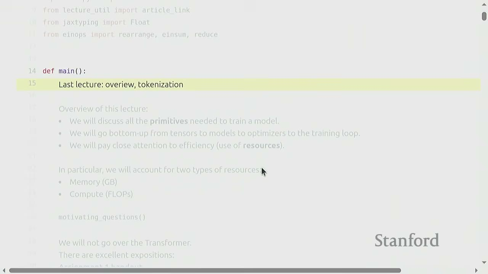
The previous lecture covered an overview of language models, building them from scratch, and tokenization (first half of Assignment 1). This lecture will focus on building a model, discussing PyTorch primitives, and emphasizing efficiency and resource usage (memory and compute).
[00:43] Motivating Questions: Napkin Math for LLMs
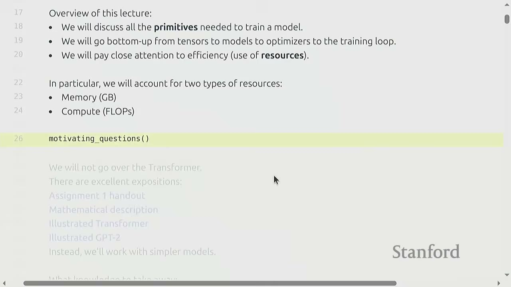
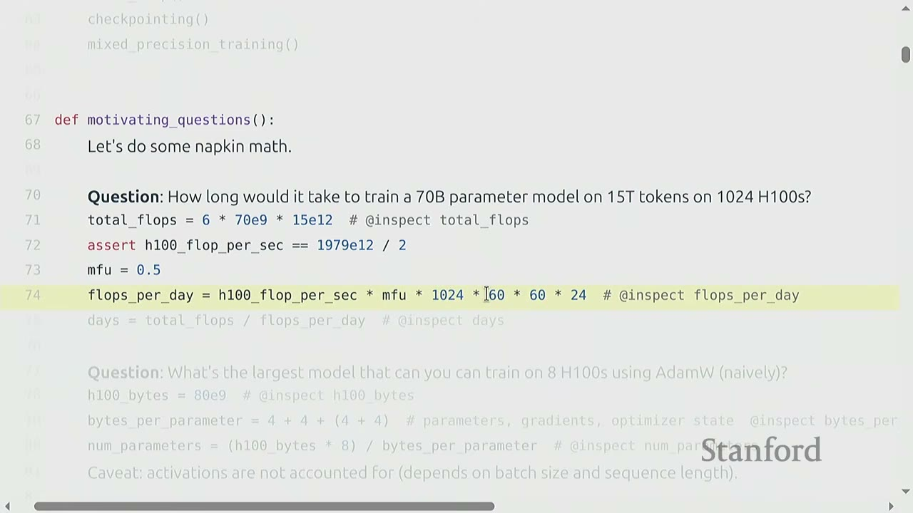
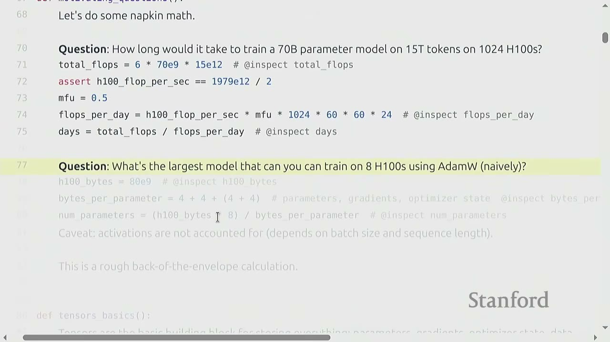
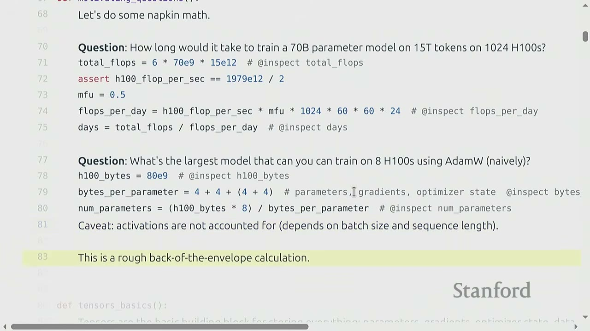
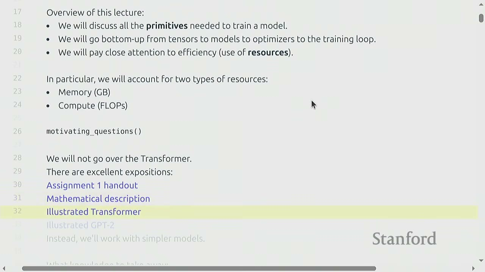
The lecture begins with "napkin math" questions to motivate the importance of resource accounting.
Question 1: How long would it it take to train a 70 billion parameter dense transformer model on 15 trillion tokens on 1024 H100s?
Reasoning: 1. Total FLOPs needed: * A common rule of thumb for training transformer models is that the total FLOPs required is $6 \times (\text{number of parameters}) \times (\text{number of tokens})$. * For a 70 billion parameter model and 15 trillion tokens: $6 \times (70 \times 10^9) \times (15 \times 10^{12}) = 6.3 \times 10^{24}$ FLOPs. * The "6" factor will be explained later in the lecture.
-
FLOPs per day from hardware:
- An H100 GPU provides a certain number of FLOPs per second (FLOP/s). Let's assume a specific value (e.g., $1979 \times 10^{12}$ FLOP/s for H100 with sparsity, 50% without, as seen later).
- We also consider Model FLOPs Utilization (MFU), which is the ratio of actual FLOP/s to promised FLOP/s. Let's assume MFU = 0.5 (a reasonable value for matrix multiplications).
- FLOPs per day = (H100 FLOP/s) $\times$ MFU $\times$ (number of H100s) $\times$ (seconds per minute) $\times$ (minutes per hour) $\times$ (hours per day)
- FLOPs per day = $(1979 \times 10^{12}) \times 0.5 \times 1024 \times 60 \times 60 \times 24 \approx 4.377 \times 10^{22}$ FLOPs/day.
-
Total training time:
- Time (days) = Total FLOPs / FLOPs per day
- Time (days) = $(6.3 \times 10^{24}) / (4.377 \times 10^{22}) \approx 143.9$ days.
- So, approximately 144 days (about 4.8 months).
Question 2: What is the largest model you can train on 8 H100s using AdamW (naively)?
Reasoning: 1. Memory per H100: An H100 has 80 GB of HBM (High Bandwidth Memory). 2. Bytes per parameter: For parameters, gradients, and optimizer state (AdamW), you typically need 16 bytes per parameter (4 bytes for the parameter, 4 for its gradient, and 8 for AdamW's two momentum states). 3. Total parameters: * Total HBM = (Number of H100s) $\times$ (Memory per H100) = $8 \times 80 \times 10^9$ bytes. * Number of parameters = (Total HBM) / (Bytes per parameter) * Number of parameters = $(8 \times 80 \times 10^9) / 16 = 40 \times 10^9 = 40$ billion parameters. * This calculation is rough because it doesn't account for activations, which depend on batch size and sequence length.
Why efficiency matters: These "back-of-the-envelope" calculations are crucial because large-scale model training directly translates to significant costs (dollars, energy). Understanding resource usage helps optimize these costs.
Note on Transformers: The lecture will not delve deeply into the Transformer architecture itself. There are excellent external resources for learning about Transformers, including Assignment 1 handout, mathematical descriptions, and illustrated guides (e.g., Illustrated Transformer, Illustrated GPT-2). The focus will be on simpler models to understand primitives and resource accounting.
What knowledge to take away: - Mechanics: Straightforward PyTorch usage. - Mindset: Resource accounting (remember to do it). - Intuitions: Broad strokes (not specific to large models).
[05:10] Memory Accounting
[05:20] Tensors Basics
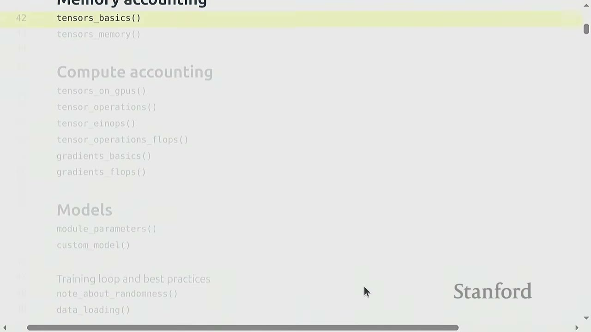
Tensors are the fundamental building blocks in deep learning for storing everything: parameters, gradients, optimizer state, data, and activations.
def tensors_basics():
# PyTorch docs on tensors
# You can create tensors in multiple ways:
x = torch.tensor([[1., 2, 3], [4, 5, 6]]) # @inspect x
x = torch.zeros(4, 8) # 4x8 matrix of all zeros @inspect x
x = torch.ones(4, 8) # 4x8 matrix of all ones @inspect x
x = torch.randn(4, 8) # 4x8 matrix of iid Normal(0, 1) samples @inspect x
# Allocate but don't initialize the values:
x = torch.empty(4, 8) # 4x8 matrix of uninitialized values @inspect x
# ...because you want to use some custom logic to set the values later
nn.init.trunc_normal_(x, mean=0, std=1, a=-2, b=2) # @inspect x
[06:00] Tensors Memory
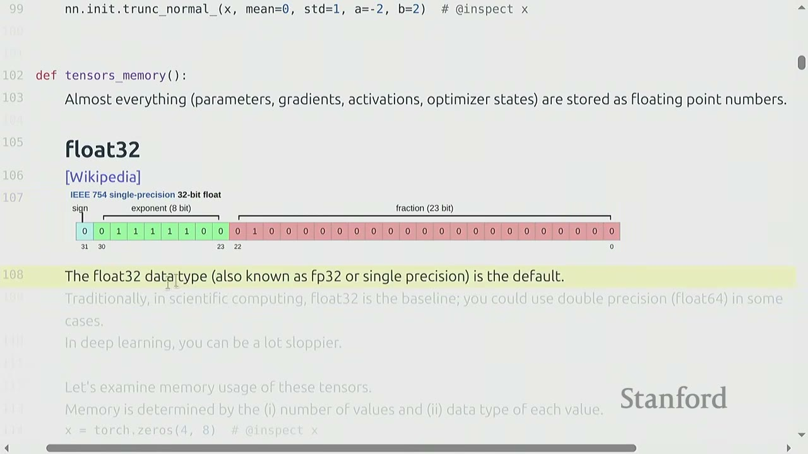
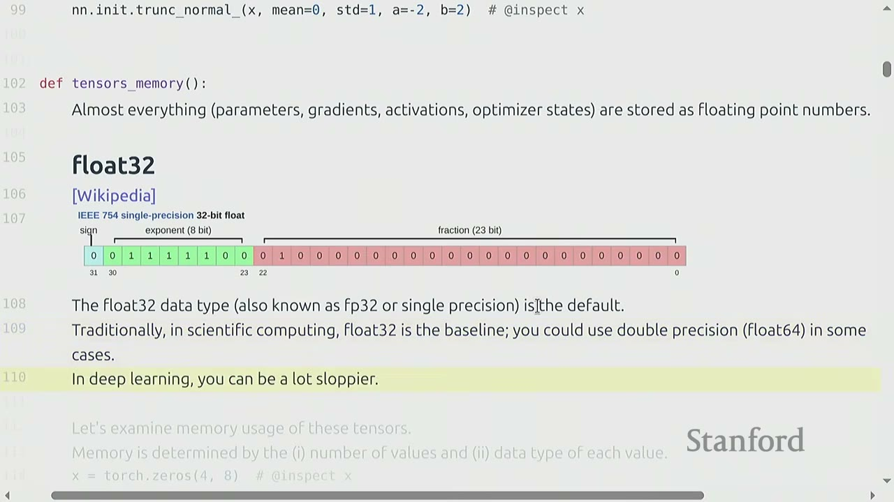
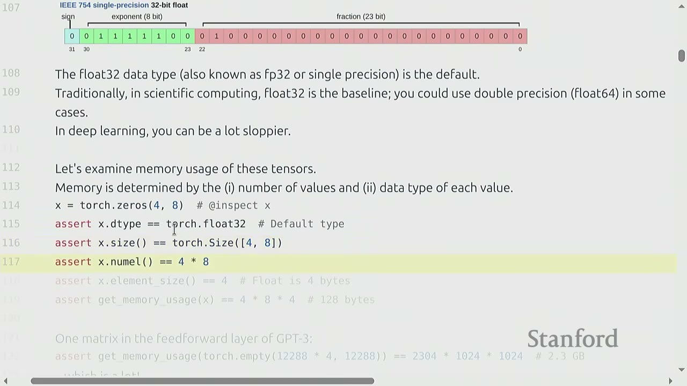
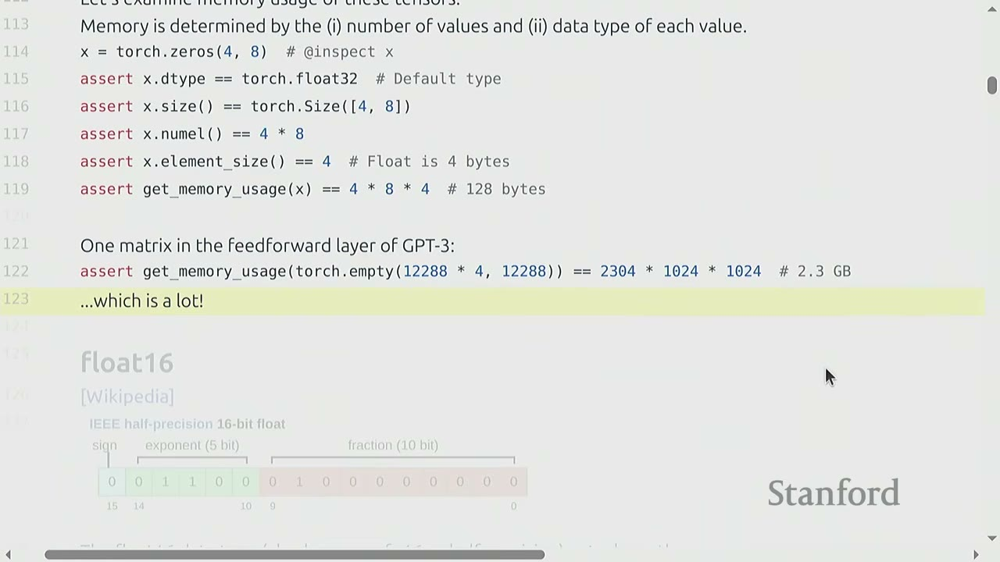
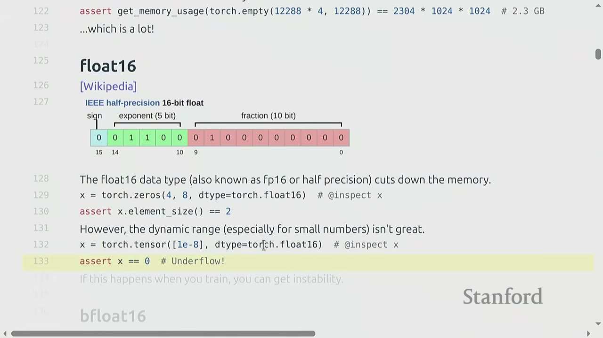
Almost everything (parameters, gradients, activations, optimizer states) is stored as floating-point numbers.
Float32 (Single-precision)
- The default data type in PyTorch is float32 (also known as FP32 or single precision).
- It uses 32 bits: 1 for sign, 8 for exponent, and 23 for fraction.
- float32 is the baseline for deep learning. Scientific computing often uses float64 (double precision).
- Deep learning is "sloppier" and float32 is usually sufficient.
Memory usage of tensors: Memory usage is determined by: 1. The number of values (elements) in the tensor. 2. The data type of each value.
def tensors_memory():
x = torch.zeros(4, 8) # @inspect x
assert x.dtype == torch.float32 # Default type
assert x.size() == torch.Size([4, 8])
assert x.numel() == 32 # 4 * 8 = 32
assert x.element_size() == 4 # Float is 4 bytes
# One matrix in the feedforward layer of GPT-3:
# assert get_memory_usage(torch.empty(12288 * 4, 12288)) == 2304 * 1024 * 1024 # 2.3 GB
# ...which is a lot!
The memory usage for a torch.zeros(4, 8) tensor is $32 \text{ elements} \times 4 \text{ bytes/element} = 128 \text{ bytes}$.
A single matrix in a GPT-3 feedforward layer can consume 2.3 GB of memory.
Float16 (Half-precision)
- float16 (also known as FP16 or half-precision) uses 16 bits: 1 for sign, 5 for exponent, and 10 for fraction.
- It cuts memory usage by half.
- However, its dynamic range is limited, especially for very small or very large numbers. This can lead to underflow/overflow issues and numerical instability during training, especially for large models.
Bfloat16 (Brain float)
- Developed by Google in 2018 to address the dynamic range issue of float16 for deep learning.
- bfloat16 uses 16 bits: 1 for sign, 8 for exponent, and 7 for fraction.
- It has the same memory footprint as float16 but the same dynamic range as float32 (due to the 8-bit exponent).
- The resolution (fraction bits) is worse than float16, but this matters less for deep learning.
- bfloat16 is generally preferred over float16 for deep learning computations due to its better dynamic range.
def tensors_memory():
# float16
x = torch.zeros(4, 8, dtype=torch.float16) # @inspect x
assert x.element_size() == 2 # Half precision is 2 bytes
# Example of underflow with float16
x = torch.tensor([1e-8], dtype=torch.float16) # @inspect x
assert x == 0 # Underflow!
# If this happens when you train, you can get instability.
# bfloat16
x = torch.tensor([1e-8], dtype=torch.bfloat16) # @inspect x
assert x != 0 # No underflow!
# Compare dynamic ranges and memory usage
# float32_info = torch.finfo(torch.float32) # @inspect float32_info
# float16_info = torch.finfo(torch.float16) # @inspect float16_info
# bfloat16_info = torch.finfo(torch.bfloat16) # @inspect bfloat16_info
FP8 (8-bit float) - Developed by Nvidia in 2022, motivated by machine learning workloads. - Uses 8 bits. H100s support two variants of FP8: E4M3 (4-bit exponent, 3-bit mantissa) and E5M2 (5-bit exponent, 2-bit mantissa). - FP8 is very crude and has even more limited precision.
Implications on training:
- Training with float32: Works, but requires lots of memory. It's the safest option.
- Training with fp8, float16, and bfloat16: Risky, and can lead to instability (underflow/overflow).
- Solution: Use mixed-precision training. This involves using different precision types for different parts of the model (e.g., float32 for attention, bfloat16 for feedforward passes).
Q&A on mixed precision:
The general rule of thumb is to use float32 for parameters and optimizer states (which accumulate over time and require higher precision) and bfloat16 for transient computations like activations in forward passes.
[01:20:00] Compute Accounting
[01:20:00] Tensors on GPUs
- By default, tensors are stored in CPU memory.
- To leverage the massive parallelism of GPUs, tensors must be explicitly moved to GPU memory. This involves a data transfer cost over the PCI bus.
- It's crucial to always know where your tensor resides (
.deviceattribute).
def tensors_on_gpus():
x = torch.zeros(32, 32)
assert x.device == torch.device("cpu")
# Let's first see if we have any GPUs.
if not torch.cuda.is_available():
return
num_gpus = torch.cuda.device_count() # @inspect num_gpus
# properties = torch.cuda.get_device_properties(i) # @inspect properties
# Move the tensor to GPU memory (device 0).
y = x.to("cuda:0")
assert y.device == torch.device("cuda", 0)
# Or create a tensor directly on the GPU:
z = torch.zeros(32, 32, device="cuda:0")
# memory_allocated = torch.cuda.memory_allocated() # @inspect memory_allocated
# new_memory_allocated = torch.cuda.memory_allocated()
# memory_used = new_memory_allocated - memory_allocated
# assert memory_used == 2 * (32 * 32 * 4) # 2 32x32 matrices of 4-byte floats
The example shows how to check for GPU availability, move a tensor to GPU, or create one directly on GPU. It also demonstrates how to verify memory allocation.
[01:25:00] Tensor Operations
Most tensors are created by performing operations on other tensors. Each operation has some memory and compute consequences.
Tensor storage (under the hood):
- PyTorch tensors are pointers into allocated memory, with metadata describing how to get to any element.
- A 2D tensor (matrix) is stored as a 1D array (underlying storage).
- Metadata includes strides, which indicate how many elements to skip in the underlying storage to move to the next element along a specific dimension.
- For a row-major 4x4 matrix, stride(0) (to go to next row) is 4, and stride(1) (to go to next column) is 1.
def tensor_storage():
# What are tensors in PyTorch?
# PyTorch tensors are pointers into allocated memory
# ...with metadata describing how to get to any element of the tensor.
x = torch.tensor([
[0, 1, 2, 3],
[4, 5, 6, 7],
[8, 9, 10, 11],
[12, 13, 14, 15],
])
# To go to the next row (dim 0), skip 4 elements in storage.
assert x.stride(0) == 4
# To go to the next column (dim 1), skip 1 element in storage.
assert x.stride(1) == 1
# To find an element:
# r, c = 1, 2
# index = r * x.stride(0) + c * x.stride(1) # @inspect index
# assert index == 6
Tensor slicing (views): - Many operations (like slicing) simply provide a different view of the tensor. - This does not make a copy, so mutations in one tensor affect the other.
def tensor_slicing():
x = torch.tensor([[1, 2, 3], [4, 5, 6]]) # @inspect x
# Many operations simply provide a different view of the tensor.
# This does not make a copy, and therefore mutations in one tensor affects the other.
# Get row 0:
y = x[0] # @inspect y
assert torch.equal(y, torch.tensor([1, 2, 3]))
# assert same_storage(x, y)
# Get column 1:
y = x[:, 1] # @inspect y
assert torch.equal(y, torch.tensor([2, 5]))
# assert same_storage(x, y)
# View 3x2 matrix as 2x3 matrix:
y = x.view(3, 2) # @inspect y
assert torch.equal(y, torch.tensor([[1, 2], [3, 4], [5, 6]]))
# assert same_storage(x, y)
# Transpose the matrix:
y = x.transpose(1, 0) # @inspect y
assert torch.equal(y, torch.tensor([[1, 4], [2, 5], [3, 6]]))
# assert same_storage(x, y)
# Check that mutating x also mutates y.
x[0][0] = 100 # @inspect x
assert y[0][0] == 100
# Note that some views are non-contiguous entries, which means that further views aren't possible.
x = torch.tensor([[1, 2, 3], [4, 5, 6]]) # @inspect x
y = x.transpose(1, 0) # @inspect y
assert not y.is_contiguous()
# try:
# y.view(2, 3)
# except RuntimeError as e:
# assert "view size is not compatible with input tensor's size and stride" in str(e)
# One can enforce a tensor to be contiguous first:
# y = x.transpose(1, 0).contiguous().view(2, 3) # @inspect y
# assert not same_storage(x, y)
# Views are free, copying take both (additional) memory and compute.
- Views are "free" (don't allocate new memory), making them useful for code readability.
- However, operations like
.contiguous()or.reshape()(which implicitly calls.contiguous()if needed) can create a copy, consuming additional memory and compute. - Non-contiguous tensors cannot be directly viewed into arbitrary shapes. They must be made contiguous first, which involves a copy.
Tensor elementwise operations:
- Elementwise operations (e.g., pow, sqrt, division) create new tensors to store results.
def tensor_elementwise():
# These operations apply some operation to each element of the tensor
# ...and return a new tensor of the same shape.
x = torch.tensor([1, 4, 9])
# assert torch.equal(x.pow(2), torch.tensor([1, 16, 81]))
# assert torch.equal(x.sqrt(), torch.tensor([1, 2, 3]))
# assert torch.equal(x / 2, torch.tensor([0.5, 2, 4.5]))
# triu takes the upper triangular part of a matrix.
# x = torch.ones(3, 3) # @inspect x
# assert torch.equal(x.triu(), torch.tensor([[1, 1, 1], [0, 1, 1], [0, 0, 1]]))
# This is useful for computing an causal attention mask, where M[i, j] is the contribution of i to j.
Tensor matrix multiplication (matmul):
- Matrix multiplication is the "bread and butter" of deep learning.
def tensor_matmul():
# Finally, the bread and butter of deep learning: matrix multiplication.
x = torch.ones(16, 32)
w = torch.ones(32, 2)
y = x @ w
assert y.size() == torch.Size([16, 2])
# In general, we perform operations for every example in a batch and token in a sequence.
# x = torch.ones(4, 8, 16, 32)
# w = torch.ones(32, 2)
# y = x @ w
# assert y.size() == torch.Size([4, 8, 16, 2])
# In this case, we iterate over values of the first 2 dimensions of x and multiply by w.
- In deep learning, operations are often performed on batches of data, where tensors have dimensions like
(batch, sequence, ...). PyTorch handles this by iterating over the leading dimensions.
[01:30:00] Tensor Einops
einops is a library for manipulating tensors where dimensions are named, inspired by Einstein summation notation.
Motivation (traditional PyTorch code):
- Traditional PyTorch code often involves operations like x @ y.transpose(-2, -1), which can be confusing due to the use of negative indices and implicit dimension meanings.
- It's easy to mess up dimensions, and comments can get out of sync with the code.
def einops_motivation():
# Traditional PyTorch code:
# x = torch.ones(2, 2, 3) # batch, sequence, hidden @inspect x
# y = torch.ones(2, 2, 3) # batch, sequence, hidden @inspect y
# z = x @ y.transpose(-2, -1) # batch, sequence, sequence @inspect z
# Easy to mess up the dimensions (what is -2, -1?)
Solution: einops
- einops allows you to name dimensions, making tensor operations more explicit and readable.
def tensor_einops():
# Einops is a library for manipulating tensors where dimensions are named.
# It is inspired by Einstein summation notation (Einstein, 1916).
# [Einops tutorial]
Jax typing basics:
- jax_typing is a library that provides a way to specify dimension names in type hints, improving documentation.
def jaxtyping_basics():
# How do you keep track of tensor dimensions?
# Old way:
# x = torch.ones(2, 1, 3) # batch seq heads hidden @inspect x
# New (jaxtyping) way:
# x: Float[torch.Tensor, "batch seq heads hidden"] = torch.ones(2, 1, 3) # @inspect x
# Note that this is just documentation (no enforcement).
einops_einsum (generalized matrix multiplication with good bookkeeping):
- einsum allows you to specify input and output dimensions by name. Dimensions not named in the output are summed over.
def einops_einsum():
# Einsum is generalized matrix multiplication with good bookkeeping.
# Define two tensors:
# x: Float[torch.Tensor, "batch seq1 hidden"] = torch.ones(2, 3, 4) # @inspect x
# y: Float[torch.Tensor, "batch seq2 hidden"] = torch.ones(2, 3, 4) # @inspect y
# Old way:
# z = x @ y.transpose(-2, -1) # batch, sequence, sequence @inspect z
# New (einops) way:
# z = einsum(x, y, "batch seq1 hidden, batch seq2 hidden -> batch seq1 seq2") # @inspect z
# Dimensions that are not named in the output are summed over.
# Or can use ... to represent broadcasting over any number of dimensions:
# z = einsum(x, y, "..., seq1 hidden, ... hidden -> ... seq1 seq2") # @inspect z
einsumautomatically figures out the best way to reduce and optimize the operation. When used withtorch.compile, it can reuse the same optimized implementation.
einops_reduce:
- reduce operates on one tensor to aggregate dimensions (e.g., sum, mean, max, min).
def einops_reduce():
# You can reduce a single tensor via some operation (e.g., sum, mean, max, min).
# x: Float[torch.Tensor, "batch seq hidden"] = torch.ones(2, 3, 4) # @inspect x
# Old way:
# y = x.mean(dim=-1) # @inspect y
# New (einops) way:
# y = reduce(x, "... hidden -> ...", "sum") # @inspect y
einops_rearrange:
- rearrange allows reshaping and reordering dimensions, useful when one dimension represents two underlying dimensions that need to be broken up or combined.
def einops_rearrange():
# Sometimes, a dimension represents two dimensions
# ...and you want to operate on one of them.
# x: Float[torch.Tensor, "batch seq total_hidden"] = torch.ones(2, 3, 8) # @inspect x
# ...where total_hidden is a flattened representation of heads * hidden1
# w: Float[torch.Tensor, "hidden1 hidden2"] = torch.ones(4, 4)
# Break up total_hidden into two dimensions (heads and hidden1):
# x = rearrange(x, "..., (heads hidden1) -> ... heads hidden1", heads=2) # @inspect x
# Perform the transformation by w:
# x = einsum(x, w, "..., hidden1, hidden1 hidden2 -> ... hidden2") # @inspect x
# Combine heads and hidden2 back together:
# x = rearrange(x, "..., heads hidden2 -> (heads hidden2)") # @inspect x
rearrangeis like a fancier version ofview, allowing explicit naming of dimensions during reshaping.rearrangecan also be used to combine dimensions back together.
[01:35:00] Tensor Operations FLOPs
Floating-point operation (FLOP): A basic operation like addition ($x+y$) or multiplication ($x \times y$).
Confusing acronyms: - FLOPs: Floating-point operations (measure of computation done). - FLOP/s: Floating-point operations per second (measure of hardware speed). - The lecture will use FLOP/s to avoid confusion.
Intuitions about FLOPs: - Training GPT-3 (2020) took $3 \times 10^{23}$ FLOPs. - Training GPT-4 (2023) is speculated to take $2 \times 10^{25}$ FLOPs. - US executive order required reporting models trained with $\ge 10^{26}$ FLOPs (now revoked). - A100 has a peak performance of 312 TFLOP/s. - H100 has a peak performance of 1979 TFLOP/s with sparsity (50% without). This is for structured sparsity where 2 out of 4 elements are zero. If not sparse, it's half that number.
Example calculation: - 8 H100s for 2 weeks: * Total FLOPs = $8 \times (60 \times 60 \times 24 \times 7 \times 2) \times \text{H100_flop_per_sec} \approx 4.788 \times 10^{21}$ FLOPs.
[01:40:00] Linear Model Example
Let's consider a simple linear model: $y = x \times w$.
def tensor_operations_flops():
# As motivation, suppose you have a linear model.
# We have n points
# Each point is d-dimensional
# The linear model maps each d-dimensional vector to a k outputs
# B = 16384 # Number of points
# D = 32768 # Dimension
# K = 8192 # Number of outputs
# device = get_device()
# x = torch.ones(B, D, device=device)
# w = torch.randn(D, K, device=device)
# y = x @ w
# We have one multiplication (x[i][j] * w[j][k]) and one addition per (i, j, k) triple.
# actual_num_flops = 2 * B * D * K # @inspect actual_num_flops
- For a matrix multiplication of dimensions $B \times D$ and $D \times K$, the output is $B \times K$.
- Each element in the output requires $D$ multiplications and $D-1$ additions.
- So, for each element in the output, there are approximately $2D$ FLOPs.
- Total FLOPs = $B \times K \times (2D) = 2 \times B \times D \times K$.
- This is a key formula to remember for matrix multiplication FLOPs.
FLOPs of other operations: - Elementwise operations on an $m \times n$ matrix require $O(mn)$ FLOPs. - Addition of two $m \times n$ matrices requires $mn$ FLOPs. - In general, no other operation you'd encounter in deep learning is as expensive as matrix multiplication for large enough matrices. - This is why napkin math often simplifies to only consider matrix multiplications. Hardware is designed for large matrix multiplications, so for efficiency, models should leverage this.
Interpretation: - $B$ is the number of data points (or tokens). - $D \times K$ is the number of parameters. - FLOPs for forward pass is $2 \times (\text{number of tokens}) \times (\text{number of parameters})$. This generalizes to Transformers.
How do our FLOPs calculations translate to wall-clock time (seconds)? - We can time the matrix multiplication and calculate the actual FLOP/s.
def tensor_operations_flops():
# Let us time it!
# actual_time = time_matmul(x, w) # @inspect actual_time
# actual_flop_per_sec = actual_num_flops / actual_time # @inspect actual_flop_per_sec
- The example shows an actual time of 0.163 seconds for the matrix multiplication, resulting in an actual FLOP/s of $5.4 \times 10^{13}$.
Model FLOPs Utilization (MFU): - Definition: MFU = (actual FLOP/s) / (promised FLOP/s) (ignoring communication/overhead). - MFU is a measure of how well the model utilizes the theoretical peak performance of the hardware. - Usually, MFU of $> 0.5$ is considered quite good, and will be higher if matrix multiplications dominate the workload. - For the example, the promised FLOP/s for H100 (float32) is $6.75 \times 10^{13}$. - MFU = $(5.4 \times 10^{13}) / (6.75 \times 10^{13}) \approx 0.801$. This is a good MFU.
MFU with bfloat16:
- If we perform the same matrix multiplication with bfloat16, the actual time is 0.032 seconds (much faster).
- The actual FLOP/s is $2.735 \times 10^{14}$ (higher).
- The promised FLOP/s for H100 (bfloat16) is $9.895 \times 10^{14}$.
- MFU = $(2.735 \times 10^{14}) / (9.895 \times 10^{14}) \approx 0.276$.
- The MFU is lower for bfloat16 because the promised FLOP/s is much higher, making it harder to fully utilize.
[01:50:00] Gradients FLOPs
We've discussed forward pass FLOPs. Now let's consider the FLOPs for computing gradients (backward pass).
Example: Simple linear model - Loss: $y = 0.5 \times (x \times w - 5)^2$.
def gradients_basics():
# Forward pass: compute loss
# x = torch.tensor([1., 2, 3])
# w = torch.tensor([1., 1, 1], requires_grad=True) # Want gradient
# pred_y = x @ w
# loss = 0.5 * (pred_y - 5).pow(2)
# Backward pass: compute gradients
# loss.backward()
# assert loss.grad is None
# assert pred_y.grad is None
# assert x.grad is None
# assert torch.equal(w.grad, torch.tensor([1, 2, 3]))
FLOPs for computing gradients: - Let's consider a two-layer linear network: $x \rightarrow w_1 \rightarrow h_1 \rightarrow w_2 \rightarrow h_2 \rightarrow \text{loss}$. - We need to compute gradients with respect to $h_1$, $h_2$, $w_1$, and $w_2$. - Focus on computing the gradient for $w_2$ using the chain rule. - The gradient $dL/dw_2$ involves operations similar to matrix multiplication. - The number of FLOPs for the backward pass (computing $dL/dw_2$) is $2 \times B \times D \times K$. - Similarly, computing $dL/dh_1$ also involves matrix multiplication-like operations. - The total FLOPs for the backward pass (for all parameters) is approximately $4 \times (\text{number of data points}) \times (\text{number of parameters})$.
Summary of FLOPs: - Forward pass: $2 \times (\text{number of data points}) \times (\text{number of parameters})$ FLOPs. - Backward pass: $4 \times (\text{number of data points}) \times (\text{number of parameters})$ FLOPs. - Total: $6 \times (\text{number of data points}) \times (\text{number of parameters})$ FLOPs. - This explains the "6" factor in the initial napkin math question.
[02:00:00] Models
[02:00:00] Module Parameters
- Parameters in PyTorch are stored as
nn.Parameterobjects. - Parameter initialization is crucial for training stability.
- If parameters are initialized with large values, gradients can blow up, leading to unstable training.
- A common technique is to rescale initial weights by $1/\sqrt{\text{num_inputs}}$ (Xavier initialization).
- For extra safety, weights can be truncated to a specific range (e.g., [-3, 3]).
[02:05:00] Custom Model
Let's build a simple deep linear model using nn.Parameter.
def custom_model():
# Let's build up a simple deep linear model using nn.Parameter.
# D = 64 # Dimension
# num_layers = 2
# model = Cruncher(dim=D, num_layers=num_layers).to(get_device())
# param_sizes = []
# for name, param in model.state_dict().items():
# param_sizes.append((name, param.numel()))
# assert param_sizes == [('layers.0.weight', D * D), ('layers.0.bias', D),
# ('layers.1.weight', D * D), ('layers.1.bias', D),
# ('final.weight', D), ('final.bias', 1)]
# num_parameters = get_num_parameters(model)
# assert num_parameters == (D * D) + D + (D * D) + D + D + 1
# Remember to move the model to the GPU.
# device = get_device()
# model = model.to(device)
# Run the model on some data.
# B = 8 # Batch size
# x = torch.randn(B, D, device=device)
# y = model(x)
# assert y.size() == torch.Size([B, 1])
- The
Crunchermodel is a customnn.Modulewithnum_layerslinear layers, each followed by a linear layer for the final output. - Each
Linearlayer consists of a weight matrix and a bias vector. - The total number of parameters in this model is $D^2 \times (\text{num_layers}) + D \times (\text{num_layers}) + D + 1$.
[02:10:00] Training Loop and Best Practices
Randomness: - Randomness appears in many places: parameter initialization, dropout, data ordering. - For reproducibility, it's recommended to always pass a different random seed for each use of randomness. - Determinism is particularly useful when debugging. - In PyTorch, there are multiple places to set random seeds (torch, numpy, python's random module). It's best to set them all.
Data loading:
- In language modeling, data is a sequence of integers (output by the tokenizer).
- It's convenient to serialize data as numpy arrays.
- For large datasets (e.g., LLaMA data is 2.8 TB), you don't want to load the entire data into memory at once.
- Use np.memmap to lazily load only the accessed parts into memory. This allows treating a file on disk as a numpy array.
- A data loader generates batches of sequences for training.
Optimizer: - We've defined our model. Now let's define the optimizer. - SGD (Stochastic Gradient Descent): Computes gradients for a batch and takes a step. - Momentum: SGD + exponential averaging of gradients. - AdaGrad: SGD + averaging by squared gradients. Scales gradients by the inverse of the square root of past squared gradients. - RMSprop: AdaGrad + exponentially averaging of squared gradients. - Adam: RMSprop + momentum. Combines exponential averaging of gradients and squared gradients.
def optimizer():
# Recall our deep linear model.
# B = 2
# D = 4
# num_layers = 2
# model = Cruncher(dim=D, num_layers=num_layers).to(get_device())
# Let's define the AdaGrad optimizer
# AdaGrad:
# g2 = sum_{t=0}^{t} g_t^2
# p_t+1 = p_t - lr * g_t / sqrt(g2 + 1e-5)
# Compute gradients
# x = torch.randn([4., D], device=get_device())
# y = torch.tensor([4., 5.], device=get_device())
# pred_y = model(x)
# loss = F.mse_loss(input=pred_y, target=y)
# loss.backward()
# Take a step
# optimizer = AdaGrad(model.parameters(), lr=0.01)
# state = model.state_dict() # @inspect state
# optimizer.step()
# state = model.state_dict() # @inspect state
# Free up the memory (optional)
# optimizer.zero_grad(set_to_none=True)
- The
optimizer.step()method updates the model parameters based on the computed gradients and the optimizer's internal state. - The
optimizer.zero_grad()method clears the gradients of all optimized tensors.
Implementation of AdaGrad:
- To implement a custom optimizer in PyTorch, you override the torch.optim.Optimizer class.
- The __init__ method takes the model parameters and learning rate.
- The step() method contains the logic for updating parameters.
- It accesses the optimizer's internal state (e.g., g2 for AdaGrad) for each parameter.
- It updates g2 by adding the square of the current gradient.
- It then updates the parameter using the AdaGrad formula: $p_{t+1} = p_t - \text{lr} \times g_t / \sqrt{g2 + 10^{-5}}$.
Memory for optimizer state:
- The optimizer state (e.g., g2 in AdaGrad, or momentum terms in Adam) also consumes memory.
- For AdaGrad, it stores one copy of squared gradients for each parameter. So, num_optimizer_states = num_parameters.
- For Adam, it stores two copies (momentum and squared gradients), so num_optimizer_states = 2 * num_parameters.
Total memory for training:
- Total memory = $4 \times (\text{num_parameters} + \text{num_activations} + \text{num_gradients} + \text{num_optimizer_states})$.
- Assuming float32 (4 bytes per value).
- num_parameters: $D^2 \times (\text{num_layers}) + D \times (\text{num_layers}) + D + 1$.
- num_activations: $B \times D \times (\text{num_layers})$.
- num_gradients: num_parameters.
- num_optimizer_states: num_parameters (for AdaGrad).
Compute for one step: - FLOPs for one step = $6 \times B \times \text{num_parameters}$.
[02:20:00] Training Loop
def train_loop():
# Generate data from linear function with weights (0, 1, 2, ..., D-1).
# true_w = torch.arange(D, dtype=torch.float32, device=get_device())
# x = torch.randn(B, D, device=get_device())
# true_y = x @ true_w
# Let's do a basic run
# train("simple", get_batch, D=D, num_layers=0, B=B, num_train_steps=10, lr=0.01)
# Do some hyperparameter tuning
# train("simple", get_batch, D=D, num_layers=0, B=B, num_train_steps=10, lr=0.1)
def train(name: str, get_batch, D: int, num_layers: int, lr: float):
# model = Cruncher(dim=D, num_layers=num_layers).to(get_device())
# optimizer = SGD(model.parameters(), lr=lr)
# for t in range(num_train_steps):
# x, y = get_batch(B=B)
# pred_y = model(x)
# loss = F.mse_loss(pred_y, y)
# loss.backward()
# optimizer.step()
# optimizer.zero_grad(set_to_none=True)
Checkpointing:
- Training large language models takes a long time and will certainly crash.
- To avoid losing progress, it's useful to periodically save your model and optimizer state to disk.
- When saving, store both model.state_dict() and optimizer.state_dict().
def checkpointing():
# Training language models take a long time and will certainly crash.
# You don't want to lose all your progress.
# During training, it is useful to periodically save your model and optimizer state to disk.
# model = Cruncher(dim=64, num_layers=3).to(get_device())
# optimizer = AdaGrad(model.parameters(), lr=0.01)
# Save the checkpoint
# checkpoint = {
# "model": model.state_dict(),
# "optimizer": optimizer.state_dict(),
# }
# torch.save(checkpoint, "model_checkpoint.pt")
# Load the checkpoint
# loaded_checkpoint = torch.load("model_checkpoint.pt")
Mixed-precision training:
- The choice of data type (float32, bfloat16, fp8) has tradeoffs:
- Higher precision: more accurate/stable, more memory, more compute.
- Lower precision: less accurate/stable, less memory, less compute.
- Solution: Use float32 by default, but use bfloat16 or fp8 when possible.
- Concrete plan:
- Use {bfloat16, fp8} for the forward pass (activations).
- Use float32 for the rest (parameters, gradients).
- This is the idea behind mixed-precision training.
- PyTorch has an automatic mixed precision (AMP) library (torch.cuda.amp).
- Nvidia's Transformer Engine supports FP8 for linear layers.
Final comment: - People are pushing the envelope on what precision is needed. - The challenge with lower precision is numerical instability. Tricks are used to control numerics during training. - Model design and system design are synergistic: models are designed to leverage hardware properties (e.g., Nvidia chips are optimized for lower precision).